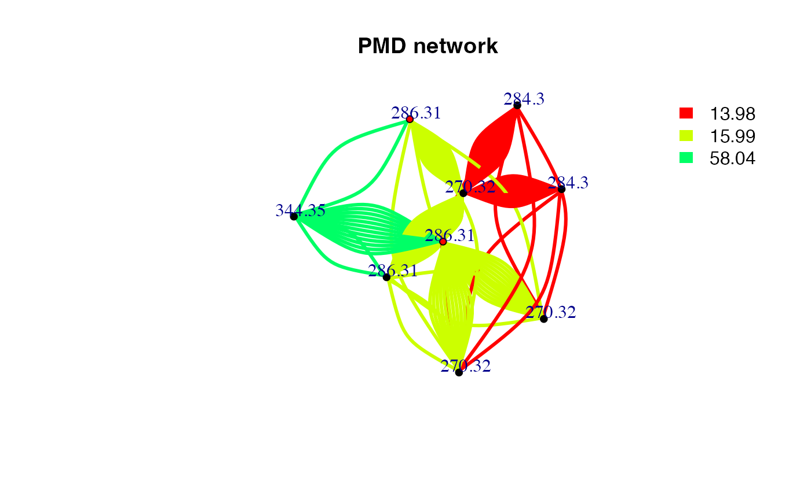
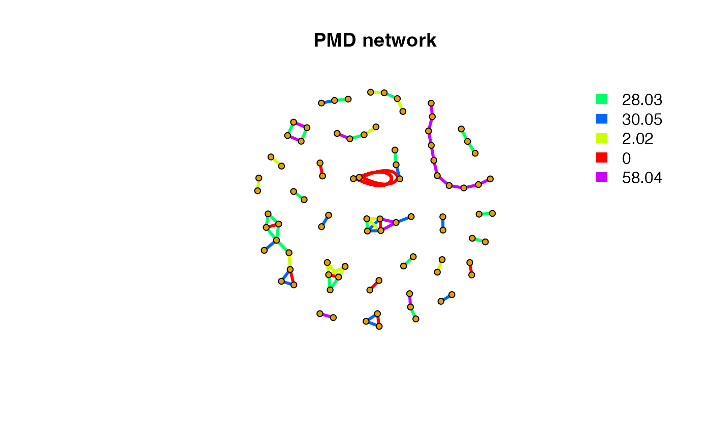
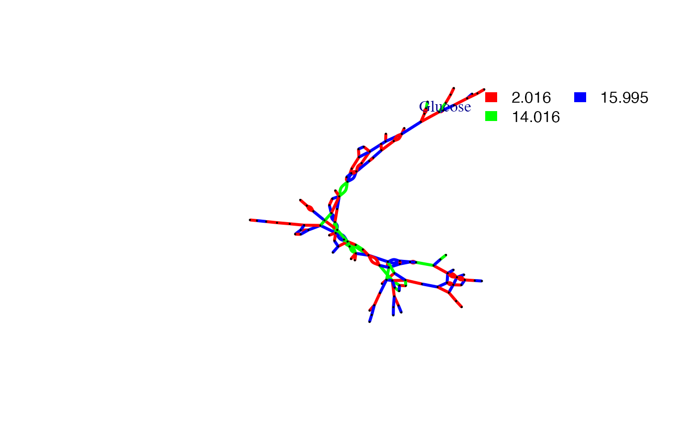

PMD based Reactomics tried to evaluate untargeted HRMS profiles at reaction level. Reactomics is the extension of structure/reaction directed analysis for HRMS data and PMDs are treated as relationship unit for further discussion as compounds for metabolomics. Reaction level evaluation could be found in PMD network analysis, Source appointment and biomarker reaction discovery.
PMD network analysis
In untargeted metabolites profiles from HRMS, two ions or peaks could be treated together as long as they could be connected by relationship. Regular untargeted workflow prefers intensity correlation between compounds. However, PMD could also be the chemical bridge between two compounds or ions. For example, oxidation would add oxygen atom to the parent compound and introduce a PMD 15.995 Da. Meanwhile, One peak or compound could be involved in multiple reactions. In this case, we could build PMD network for certain ion or compound.
However, we need to the PMDs list to build such network for either one compound or one sample. One way is using the high frequency PMDs list from previous reported reactions and another way is using the high frequency PMDs within certain data set such as KEGG or HMDB. The former way try to focus on known reactions such as Phase I reactions for exdogenous compounds while the latter way is useful to explorer new reactions or unknown reaction patterns within the data set. The latter way is actually the structure/reaction directed analysis.
PMD network analysis is the analysis to check or explorer the PMD relationship among co-existed ions from one sample or multiple samples. The edge between ions in the network means certain PMD relationship are valid in this data set. Meanwhile, the intensity correlation between paired ions could also be considered to connect the vertices. Such network is build based on local recursive search for all possible connections.
PMD network analysis is useful to screen metabolites. Regular metabolites discovery method try to predict metabolites’ MS2 spectra and then match the data. In PMD network analysis, metabolites are predicted by high frequency PMD or preferred PMD list within the MS1 data and such prediction could be extended to the metabolites of metabolites. Such PMD search will stop when no new metabolites could be connected to the network. Such searching method is much easier and quick to get overview of metabolites networks. Identification could follow the discovery from MS1 data.
If you have a specific compound and want to check the metabolites of certain PMD, you could use getchain to extract the network of that compounds
library(igraph) #> #> Attaching package: 'igraph' #> The following objects are masked from 'package:stats': #> #> decompose, spectrum #> The following object is masked from 'package:base': #> #> union # check metabolites of C18H39NO # Use common PMDs for biological reactions chain <- getchain(spmeinvivo,diff = c(2.02,14.02,15.99,58.04,13.98),mass = 286.3101,digits = 2,corcutoff = 0) # show as network net <- graph_from_data_frame(chain$sdac,directed = F) pal <- grDevices::rainbow(5) plot(net,vertex.label=round(as.numeric(V(net)$name),2),vertex.size =5,edge.width = 3,edge.color = pal[as.numeric(as.factor(E(net)$diff2))],vertex.label.dist=1,vertex.color=ifelse(round(as.numeric(V(net)$name),4) %in% 286.3101,'red','black'), main = 'PMD network') legend("topright",bty = "n", legend=unique(E(net)$diff2), fill=unique(pal[as.numeric(as.factor(E(net)$diff2))]), border=NA,horiz = F)

# Consider the correlation coefficient cutoff chain <- getchain(spmeinvivo,diff = c(2.02,14.02,15.99,58.04,13.98),mass = 286.3101,digits = 2,corcutoff = 0.6) # show as network net <- graph_from_data_frame(chain$sdac,directed = F) pal <- grDevices::rainbow(5) plot(net,vertex.label=round(as.numeric(V(net)$name),2),vertex.size =5,edge.width = 3,edge.color = pal[as.numeric(as.factor(E(net)$diff2))],vertex.label.dist=1,vertex.color=ifelse(round(as.numeric(V(net)$name),4) %in% 286.3101,'red','black'), main = 'PMD network') legend("topright",bty = "n", legend=unique(E(net)$diff2), fill=unique(pal[as.numeric(as.factor(E(net)$diff2))]), border=NA,horiz = F)

Here only three PMD relationship could be found for C18H39NO. The duplicate edges between two vertices or self-loop edges mean isomer related PMD reactions. If we consider the correlation, the network would be trimmed. Since reaction might not always involve correlation, PMD network analysis could found more potential metabolites.
If you want to see all the independent peaks’ high frequency PMDs as networks for certain sample, the following code will help. This part will use the high frequency PMDs cutoff 12 from the data to build the networks for all the independent peaks.
std <- globalstd(spmeinvivo,sda = F) #> 75 retention time cluster found. #> 380 paired masses found #> 9 unique within RT clusters high frequency PMD(s) used for further investigation. #> 719 isotopologue(s) related paired mass found. #> 492 multi-charger(s) related paired mass found. #> 8 retention group(s) have single peaks. 14 23 32 33 54 55 56 75 #> 11 group(s) with multiple peaks while no isotope/paired relationship 4 5 7 8 11 41 42 49 68 72 73 #> 9 group(s) with multiple peaks with isotope without paired relationship 2 9 22 26 52 62 64 66 70 #> 4 group(s) with paired relationship without isotope 1 10 15 18 #> 43 group(s) with paired relationship and isotope 3 6 12 13 16 17 19 20 21 24 25 27 28 29 30 31 34 35 36 37 38 39 40 43 44 45 46 47 48 50 51 53 57 58 59 60 61 63 65 67 69 71 74 #> 297 std mass found. #> PMD frequency cutoff is 6 by PMD network analysis with largest network average distance 5.99 . #> 57 groups were found as high frequency PMD group. #> 0 was found as high frequency PMD. #> 1.98 was found as high frequency PMD. #> 2.01 was found as high frequency PMD. #> 2.02 was found as high frequency PMD. #> 6.97 was found as high frequency PMD. #> 11.96 was found as high frequency PMD. #> 12 was found as high frequency PMD. #> 12.04 was found as high frequency PMD. #> 13.98 was found as high frequency PMD. #> 14.02 was found as high frequency PMD. #> 14.05 was found as high frequency PMD. #> 15.99 was found as high frequency PMD. #> 16.03 was found as high frequency PMD. #> 19.04 was found as high frequency PMD. #> 28.03 was found as high frequency PMD. #> 30.05 was found as high frequency PMD. #> 31.99 was found as high frequency PMD. #> 37.02 was found as high frequency PMD. #> 42.05 was found as high frequency PMD. #> 48.04 was found as high frequency PMD. #> 48.98 was found as high frequency PMD. #> 49.02 was found as high frequency PMD. #> 54.05 was found as high frequency PMD. #> 56.06 was found as high frequency PMD. #> 56.1 was found as high frequency PMD. #> 58.04 was found as high frequency PMD. #> 58.08 was found as high frequency PMD. #> 58.11 was found as high frequency PMD. #> 63.96 was found as high frequency PMD. #> 66.05 was found as high frequency PMD. #> 68.06 was found as high frequency PMD. #> 70.04 was found as high frequency PMD. #> 70.08 was found as high frequency PMD. #> 74.02 was found as high frequency PMD. #> 80.03 was found as high frequency PMD. #> 82.08 was found as high frequency PMD. #> 88.05 was found as high frequency PMD. #> 91.1 was found as high frequency PMD. #> 93.12 was found as high frequency PMD. #> 96.09 was found as high frequency PMD. #> 101.05 was found as high frequency PMD. #> 108.13 was found as high frequency PMD. #> 110.11 was found as high frequency PMD. #> 112.16 was found as high frequency PMD. #> 116.08 was found as high frequency PMD. #> 122.15 was found as high frequency PMD. #> 124.16 was found as high frequency PMD. #> 126.14 was found as high frequency PMD. #> 148.04 was found as high frequency PMD. #> 150.2 was found as high frequency PMD. #> 173.18 was found as high frequency PMD. #> 191.08 was found as high frequency PMD. #> 191.15 was found as high frequency PMD. #> 192.19 was found as high frequency PMD. #> 194.2 was found as high frequency PMD. #> 267.25 was found as high frequency PMD. #> 325.3 was found as high frequency PMD. sda <- getsda(std,freqcutoff = 12) #> 10 groups were found as high frequency PMD group. #> 0 was found as high frequency PMD. #> 2.02 was found as high frequency PMD. #> 13.98 was found as high frequency PMD. #> 14.05 was found as high frequency PMD. #> 15.99 was found as high frequency PMD. #> 28.03 was found as high frequency PMD. #> 30.05 was found as high frequency PMD. #> 58.04 was found as high frequency PMD. #> 74.02 was found as high frequency PMD. #> 126.14 was found as high frequency PMD. df <- sda$sda net <- graph_from_data_frame(df,directed = F) pal <- grDevices::rainbow(length(unique(E(net)$diff2))) plot(net,vertex.label=NA,vertex.size = 5,edge.width = 3,edge.color = pal[as.numeric(as.factor(E(net)$diff2))],main = 'PMD network') legend("topright",bty = "n", legend=unique(E(net)$diff2), fill=unique(pal[as.numeric(as.factor(E(net)$diff2))]), border=NA,horiz = F)

Here we could find clusters of metabolites. We could detect such network community structure.
# network community structure detection ceb <- cluster_edge_betweenness(net,weights = abs(E(net)$cor), directed = F) #> Warning in cluster_edge_betweenness(net, weights = abs(E(net)$cor), directed = #> F): At community.c:460 :Membership vector will be selected based on the lowest #> modularity score. #> Warning in cluster_edge_betweenness(net, weights = abs(E(net)$cor), directed = #> F): At community.c:467 :Modularity calculation with weighted edge betweenness #> community detection might not make sense -- modularity treats edge weights as #> similarities while edge betwenness treats them as distances plot(ceb, net,vertex.label=NA,vertex.size = 5,edge.width = 3,)

# output membership head(cbind(ceb$membership,ceb$names)) #> [,1] [,2] #> [1,] "1" "146.118268664153" #> [2,] "1" "162.112813715075" #> [3,] "2" "284.295501708984" #> [4,] "2" "284.295597233849" #> [5,] "1" "192.160430908203" #> [6,] "3" "326.342517752117"
Such network could also be build on correlation directed analysis which use correlation between paired peaks to build network.
cbp <- enviGCMS::getfilter(std,rowindex = std$stdmassindex) cda <- getcda(cbp) df <- cda$cda # filter based on retention time differences larger than 2 mins df <- df[df$diffrt>120,] netc <- graph_from_data_frame(df,directed = F) plot(netc,vertex.label=NA,vertex.size = 5,edge.width = 3,main = 'Correlation network')

As shown above, correlation network without PMD might merge into one big network, which lose the details of chemical reactions.
Shiny application
The PMD network for certain compound could be generated by run runPMDnet().
Source appointment
Peaks from samples could be from endogenous compounds or exogenous compounds. However, it’s hard to tell for untargeted analysis. In terms of PMD, if one peak belongs to a high frequency PMD network, it means a relatively high activity. If such sample belongs to a biological specimen, it might be endogenous compound. If a peak show no PMD network with other peaks, the biological system might not have enzyme to make reaction happen. Exogenous compounds will show a lower degree since they are xenbiotics. Since most of the peaks will show a low degree, the median of the degree could be used as cutoff. Then we could make source appointment if the assumption is hold.
deg <- degree(net, mode = 'all') median(deg) #> [1] 2 endogenous <- names(deg)[deg>median(deg)] exogenous <- names(deg)[deg<=median(deg)]
In this case, we will have 34 endogenous compounds while 79 exogenous compounds. When you find a peak show differences between groups, you could check the degree to infer its sources.
Another parameter would be the average network distances. Endogenous compounds could form a larger network with long average network distances while exdogeous compounds will connected to network with small average network distances. Such parameter could be used to determine the source of unknown compound by checking the average network distances of the compounds PMD network.
Be careful, one compound could be endogenous for one sample while exogenous for another sample. In this case, PMD network would give hints on the sources based on the context of the samples.
Biomarker reaction
Biomarker always means biomarker compounds. However, if we could quantify the reaction relationship, we could use biomarker reaction to trace certain biological process. You could use getreact to extract the ion pairs shared the same PMD and intensity ratio RSD% lower than certain cutoff. Then the sum of the intensity of all PMD pairs’ ions could be used to compare the reaction level changes among samples.
pmd <- getreact(spmeinvivo,pmd=15.99,ratiocv = 30) data15.99Da <- apply(pmd$data,2,sum) # show the quantative reaction level across samples data15.99Da #> 1405_Fish1_F1 1405_Fish1_F2 1405_Fish1_F3 1405_Fish2_F1 1405_Fish2_F2 #> 770551.1 424028.4 801798.5 281980.4 817329.3 #> 1405_Fish2_F3 1405_Fish3_F1 1405_Fish3_F2 1405_Fish3_F3 #> 376884.0 726321.1 883329.8 887317.4
PMD Reaction Database
To check the pmd reaction database:
# all reaction data("omics") head(omics) #> X KEGG RHEA_ID DIRECTION MASTER_ID ec ecocyc macie #> 1 1 R00001 22455 BI 22452 <NA> <NA> <NA> #> 2 2 R00004 24579 BI 24576 <NA> <NA> <NA> #> 3 3 R00005 19032 BI 19029 <NA> <NA> <NA> #> 4 4 R00008 22751 BI 22748 <NA> <NA> <NA> #> 5 5 R00009 20312 BI 20309 <NA> <NA> <NA> #> 6 6 R00010 20871 BI 20868 <NA> <NA> <NA> #> metacyc reactome #> 1 ENDOPOLYPHOSPHATASE-RXN <NA> #> 2 INORGPYROPHOSPHAT-RXN <NA> #> 3 <NA> <NA> #> 4 <NA> <NA> #> 5 <NA> <NA> #> 6 <NA> <NA> #> compounds pmd #> 1 [phosphate](n+1) + n H2O <=> n H(+) + (n+1) phosphate NA #> 2 diphosphate + H2O <=> H(+) + 2 phosphate NA #> 3 3 H(+) + H2O + urea-1-carboxylate <=> 2 CO2 + 2 NH4(+) NA #> 4 4-hydroxy-4-methyl-2-oxoglutarate <=> 2 pyruvate NA #> 5 2 H2O2 <=> 2 H2O + O2 NA #> 6 alpha,alpha-trehalose + H2O <=> 2 D-glucose 162.053 # kegg reaction data("keggrall") head(keggrall) #> ID ms1 formula1 ms2 formula2 pmd C H O N P #> 2 R00002 506.9957 C10H16N5O13P3 427.0294 C10H15N5O10P2 79.966 0 1 3 0 1 #> 8 R00010 342.1162 C12H22O11 180.0634 C6H12O6 162.053 6 10 5 0 0 #> 10 R00012 522.9907 C10H16N5O14P3 868.0381 C20H28N10O21P4 345.047 10 12 7 5 1 #> 12 R00014 425.0450 C12H19N4O7P2S 469.0712 C14H23N4O8P2S 44.026 2 4 1 0 0 #> 13.1 R00015 342.1162 C12H22O11 180.0634 C6H12O6 162.053 6 10 5 0 0 #> 13.2 R00015 342.1162 C12H22O11 504.1690 C18H32O16 162.053 6 10 5 0 0 #> S #> 2 0 #> 8 0 #> 10 0 #> 12 0 #> 13.1 0 #> 13.2 0 # literature reaction for mass spectrometry data("sda") head(sda) #> PMD origin #> 1 0.984016 OH ↔ NH2, e.g. de-amidiation, CHNO compounds #> 2 1.995663 F ↔ OH, halogen exchange with hydroxy group (typically -F + OH) #> 3 2.015650 ± 2H, opening or forming of double bond #> 4 7.004671 F ↔ CN, halogen exchange with cyano group #> 5 8.965779 Cl ↔ CN, halogen exchange with cyano group #> 6 13.979265 O ↔ 2H, e.g. Oxidation follwed by H2O elimination #> Ref. mode #> 1 https://doi.org/10.1016/S1044-0305(99)00090-2 both #> 2 https://doi.org/10.1016/S1044-0305(99)00090-2 both #> 3 https://doi.org/10.1016/S1044-0305(99)00090-2 both #> 4 https://doi.org/10.1016/S1044-0305(99)00090-2 both #> 5 https://doi.org/10.1016/S1044-0305(99)00090-2 both #> 6 https://doi.org/10.1016/S1044-0305(99)00090-2 both
To check the HMDB pmd database:
data("hmdb") head(hmdb) #> C H O N P S pmd pmd2 percentage #> 1 -3 4 2 0 0 0 0.021 0.02 0.9623060 #> 2 1 4 -1 0 0 0 0.036 0.04 0.9503645 #> 3 5 4 -4 0 0 0 0.052 0.05 0.9412861 #> 4 2 8 -2 0 0 0 0.073 0.07 0.9617834 #> 5 6 8 -5 0 0 0 0.088 0.09 0.9247730 #> 6 -1 12 0 0 0 0 0.094 0.09 0.9648936
To extract any compound KEGG compound’s pmd network with known PMD:
plotcn('C6H12O6','Glucose',c(2.016,14.016,15.995)) #> Average distance of PMD network is 9.42710759198882 #> Average degree 2.84210526315789
